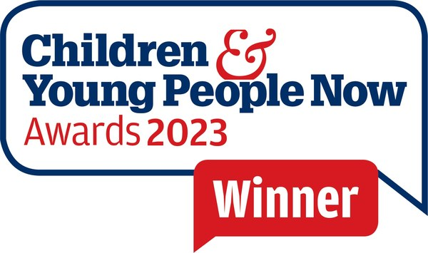
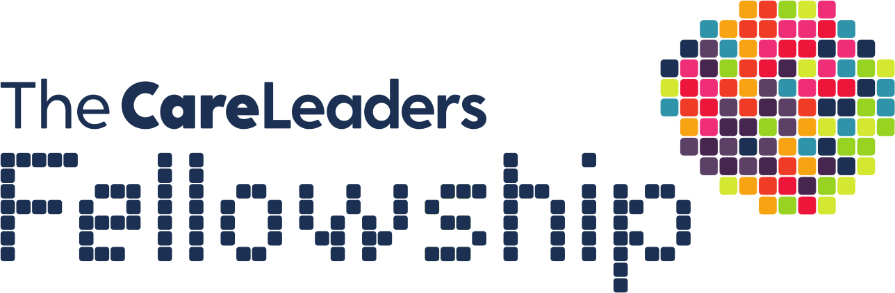
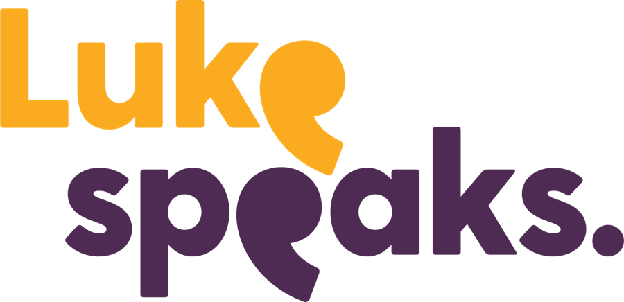

From care leaver to care leader
The Care Leaders is a children’s social care consultancy founded in 2017 by Luke Rodgers BEM. We bring lived experience of care and professional experience of changing services into the same room, so the people a service is for help shape it.
- Founded in 2017
- 36 local authorities and national bodies
- Gold, iESE 2026
Luke Rodgers BEM
Luke went into care at 10. At 15 he was living in a bed and breakfast, and at 18 in a caravan. He gave his first keynote at 19, to a room of professionals, and has spent his career since then inside children’s services: as a consultant, a trainer, a board member and a national engagement lead.
He founded The Care Leaders in 2017 and the Care Leavers National Movement. He was awarded the British Empire Medal in 2018 for his commitment to children and families, and held a Knowledge Equity Fellowship at Saïd Business School, University of Oxford. He was a non-executive director of The Staff College, sat on the advisory board of the Rees Centre at the University of Oxford and the Mockingbird programme board at The Fostering Network, and was a Young Person’s Ambassador for the National Fostering Agency.
In 2026 he led the national engagement on the Department for Education’s rewrite of the Fostering Services National Minimum Standards.

British Empire Medal
2018, for commitment to children and families
Knowledge Equity Fellow
Saïd Business School, University of Oxford
National engagement lead
The DfE’s rewrite of the fostering standards, 2026
Keynote speaker
Speaking to professionals since he was 19
How we work
Lived experience of care on its own is a story. Professional experience on its own is a method. We put the two together.
Lived experience
People who grew up in care, left it and built lives and careers afterwards, including our founder and the care-experienced leaders we work with.
Professional experience
Consultants who have run, redesigned and inspected children’s services, trained workforces and led national work with the Department for Education.
Co-production
Children, families and staff shape every project, so what we leave behind is owned by the people who will use it.
What we stand for
Five values that shape every piece of work.
Put family first
Every child deserves people who stay.
Think big, deliver detail
Ambitious for services, meticulous about the work.
Turn stories into strategy
Lived experience becomes plans, products and practice.
Talk straight
We say what we see, kindly and clearly.
Leave legacies
Everything we build is handed over to carry on without us.
Recognised by
Gold, Dual Perspective Leadership Award
iESE Public Sector Transformation Awards 2026, for combining lived and leadership experience in our work with councils.

Winner, Workforce Development Award
Children & Young People Now Awards 2023.
We have worked with 36 local authorities and with national bodies, including the Department for Education and the NHS. See the case studies.
The Care Leaders family
Six parts of one family, one purpose.
The Care Leaders
Consultancy, programmes and training for children’s services.
 nsultancy
nsultancyThe Care Leaders Consultancy
Our consultancy for local authorities, trusts and providers: transformation, fostering with Why Care, participation and employment.
The Care Leaders Learning
All our training, face to face and online.
The Care Leaders Online
Self-paced online CPD for individuals, teams and whole organisations.

The Care Leaders Fellowship
A community interest company running the 12-month Fellowship.

Luke Speaks
Keynotes and conference workshops with Luke Rodgers BEM.
In partnership
We also work with PwC on routes into work for care leavers, and with Madlug, Become and the Relational Social Work Podcast, who back our Summit and Fellowship.
See all our partnerships